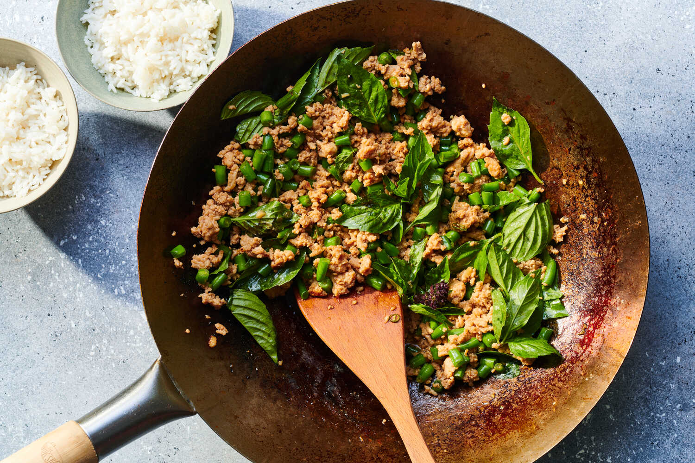

Spicy Thai Basil Chicken (Pad Krapow Gai)

What Is Thai Basil Chicken
Thai basil chicken is a stir-fry dish made with finely chopped or ground chicken
cooked with chile peppers, garlic, and shallots, and seasoned with a sweet and salty sauce and finished with fresh basil.
It's a classic dish in Thai cuisine and can be found in restaurants and as a popular street food.
Ingredients
- ⅓ cup chicken broth
- 1 tablespoon oyster sauce
- 1 tablespoon soy sauce, or as needed
- 2 teaspoons fish sauce
- 1 teaspoon white sugar
- 1 teaspoon brown sugar
- 2 tablespoons vegetable oil
- 1 pound skinless, boneless chicken thighs, coarsely chopped
- ¼ cup sliced shallots
- 4 cloves garlic, minced
- 2 tablespoons minced Thai chilies, Serrano, or other hot pepper
- 1 cup very thinly sliced fresh basil leaves
- 2 cups hot cooked rice
Directions
- Whisk chicken broth, oyster sauce, soy sauce, fish sauce, white sugar, and brown sugar together in a bowl until well blended.
- Heat large skillet over high heat. Drizzle in oil. Add chicken and stir fry until it loses its raw color, 2 to 3 minutes. Stir in shallots, garlic, and sliced chilies. Continue cooking on high heat until some of the juices start to caramelize in the bottom of the pan, about 2 or 3 more minutes. Add about a tablespoon of the sauce mixture to the skillet; cook and stir until sauce begins to caramelize, about 1 minute.
- Pour in the rest of the sauce. Cook and stir until sauce has deglazed the bottom of the pan. Continue to cook until sauce glazes onto the meat, 1 or 2 more minutes. Remove from heat.
- Stir in basil. Cook and stir until basil is wilted, about 20 seconds. Serve with rice.